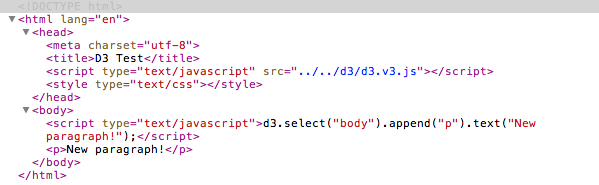

Добавление элементов
Один из ваших первых шагов будет использование D3 для создания нового DOM-элемента. Обычно, это будет SVG-объект для отрисовки визуализации данных, но мы начнем с самого простого, и просто создадим элемент p.
Начинаем с простого HTML-шаблона страницы:
<!DOCTYPE html>
<html lang="en">
<head>
<meta charset="utf-8">
<title>D3 Test</title>
<script type="text/javascript" src="d3/d3.v3.js"></script>
</head>
<body>
<script type="text/javascript">
// Your beautiful D3 code will go here
</script>
</body>
</html>
Здесь демо-страница с кодом выше. Да, она не выглядит хорошо, но если вы откроете веб-инспектор, вы должны увидеть что-то подобное:

Вернемся в редактор HTML-кода страницы, и заменим комментарий между тегами script на строку:
d3.select("body").append("p").text("New paragraph!");
Сохраним код и обновим страницу в браузере(или посмотрим соответствующую демо-страницу примера), и вуаля! В ранее пустом окне браузера теперь находится текст, а если откроем веб-инспектор, то увижим следующее:
Видите разницу? Теперь в DOM видно, как добавлен новый элемент p что называется, на лету! Может быть сейчас это не круто, но вскоре вы будете использовать ту же технику для динамического создания десятков или даже сотен элементов, и каждый будет соответствовать кусочку вашего набора данных.
Давайте пробежимся по последовательности действий, что мы сделали:
- Вызвали метод select() объекта D3, который выбирает один элемент из DOM'a, используя синтаксис селекторов CSS(Мы выбрали элемент body).
- Создали новый p-элемент и добавили его в конец нашего выбранного элемента, то есть в место, расположенное перед закрывающимся тегом